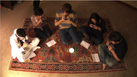

Ocarina transforms the iPhone into an ancient flute-like instrument that
responds to your breath, touch, and movements. Created in 2008, it was one
of the very first mobile/social musical instruments; its globe visualizes
where people are playing Ocarina and even lets users listen in on each
other. It went on to be one of Apple's Hall of Fame apps and currently has
more than 10 millions of users, who have since 2008 expended 2 billion
breathes blowing into their iPhones (see map below) and have listened to
each other 47 millions times in the globe! The vision was and remains to
bring the joy of music-making to as many people as possible, and to
connect the world more through music (with a little help from technology).
Computer Music Journal article on Ocarina
Wang, G. 2014.
"Ocarina: Designing the iPhone's Magic Flute."
Computer Music Journal. 38(2):8-21.
A book about shaping technology
Wang, G. Artful Design: Technology in Search of
the Sublime.
Stanford University Press. 2018. |
full excerpt: "Ocarina" (pdf)
|
|
Legend of Zelda Theme (on iPhone Ocarina)
video | by Ge Wang + Tanya Sleiman
November 2008
| Vimeo
| YouTube
| .mov
This was the original release video for Ocarina in 2008. It went viral "dude blows into
iPhone to play Legend of Zelda", helping to propel Ocarina to a #1 selling app in the
United States and in 21 countries around the world.
|
|

|
Stairway to Heaven intro (for guitar and five iPhones)
video | by Ge Wang
November 2008
| Vimeo
| YouTube
| .mov
This video, initially created to reach a potentially different
generation of iPhone users, spawned the notion of "dirty iPhone hippies"...
|
|

|
Ocarina: Listening to the World
video | by Ge Wang
Fall 2008
| Vimeo
| YouTube
June 2020
| YouTube
(one hour of listening to the World play Ocarina)
The Globe visualization in Ocarina. Listening to people blow into their phones from
around the world. Who are they?
|
|
|
Ocarina 2 Medley
video | by Ge Wang + Turner Kirk (with Andrew Briggs)
Spring 2012
| Vimeo
| YouTube
A short medley on Ocarina 2, including Clair de Lune, Legend of Zelda,,
and Ennio Morricone's "The Good, the Bad, and the Ugly".
|
|
 |
So Many iPhone Apps, So Little Time
New York Times | by David Pogue
March 2009
| online
"It's one of the most magical programs I've ever seen for the iPhone, and
probably for any computer. It's Ocarina, named after the ancient clay wind
instrument."
|
|
|
"The DIY Orchestra of the Future"
A  talk by Ge Wang talk by Ge Wang
May 2014
| TED.com
| .mp4
This TED talk tells a story that starts from a computer music programming
language (ChucK), to laptop orchestra, to Ocarina, and a new social
dimension of music-making...
|

distribution of breaths blown into Ocarina.
|